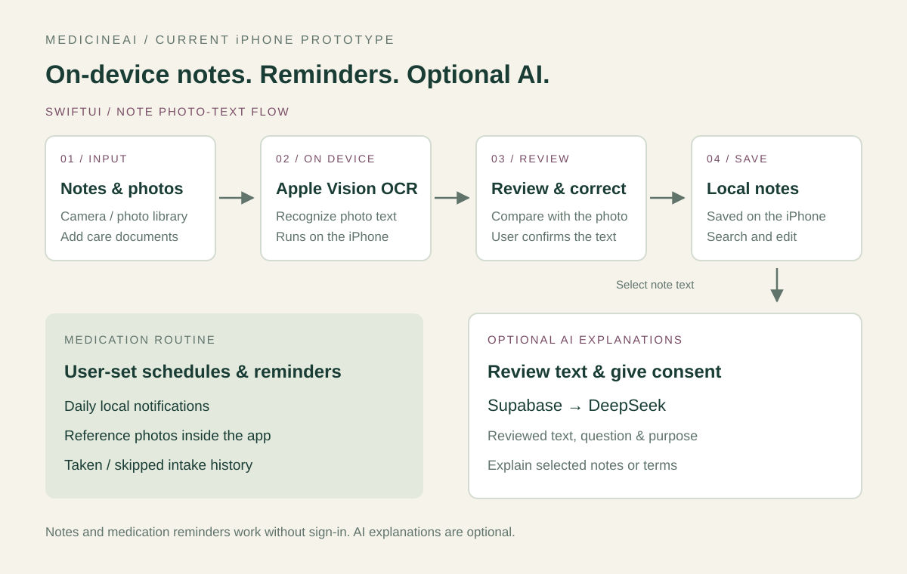

PROTOTYPE LOGICIEL
Medicine AI : un prototype d’aide à la prise de médicaments.
Pour le Conrad Challenge, j’ai développé un prototype d’aide à la prise de médicaments utilisant l’IA, destiné aux personnes âgées et aux personnes atteintes de maladies chroniques.

L’objectif
Réunir les informations des dossiers médicaux, les rappels de prise de médicaments et les rapports quotidiens dans une interface conçue pour les utilisateurs et leurs aidants.

Ce que j’ai développé
- Intégration de la reconnaissance optique de caractères et de TextCNN pour traiter les dossiers médicaux.
- Conception de rappels de prise, d’alertes avec images de comprimés et de rapports de santé quotidiens.
- Développement de l’interface avec PyQt5 et tests du prototype sur des données médicales.
Cadre du projet
Ce travail a été réalisé pour le Conrad Challenge. J’ai été finaliste de l’édition chinoise en 10e année.
Méthodes et outils
OCR · TextCNN · Python · PyQt5